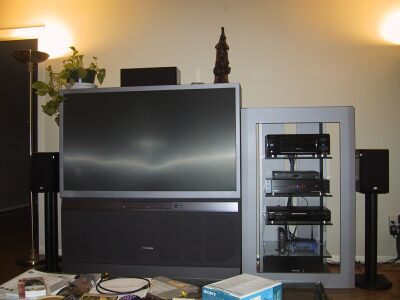
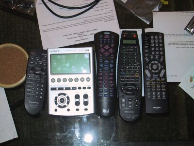
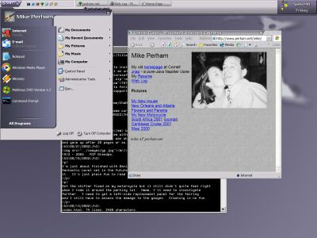

10/11/2002
At long last I'm happy to say that my new home theater system is basically
finished. I paid a professional installer to hook up my 5.1 speaker system
and they did a great job. All I'm waiting for is the new Tivo system and
my system will be complete. Here's a picture of the main system and all
the remotes that go with everything!
 
The components are:
- Toshiba 57HDX82 57" HDTV
- Pioneer VSX-41 Elite AV Reciever
- Hughes Series 2 DirecTivo
- Panasonic RP-56 Progressive DVD player
- Monster Cable HTS-2500 power conditioner
- NHT 5.1 speaker system
- Sony RM-AV3000 LCD remote
10/05/2002
Well, I have the majority of my new home theater system installed. I
bought a Toshiba 57" TV, Pioneer Elite receiver, NHT 5.1
speaker system and the new DirecTiVo. DirecTV is being installed on
Tuesday. I can't wait to watch motorcycling racing on Speedvision.
09/24/2002
I've been terrible about keeping up this log lately. Life is just very
busy. I replaced the door this weekend with the help of a friend who has
been doing some door work of his own recently. Becky and I painted it
white the next day but didn't quite finish it so we still need to finish it
this weekend. After that I need to get a locksmith out to install the
lock/deadbolt and change all the locks in the house to one master key.
My bike has a bent front subframe which holds the mirror in the wrong
position. I was going to bend it back with the help of a torch in my
motorcycle repair course but I just found a subframe in good condition on
ebay so I'm just going to buy it and replace it. After that I need to get
a new left fairing and things will be good.
09/10/2002
I had to break into my own house this morning. I went into the garage to
leave for work and realized I didn't have my keys or cell phone on me.
That's when I heard the garage access door click behind me. Drat. The
rest of the house was locked up tight so I had to smash the window in the
garage access door. Oh well, that door looked kind of ratty anyways. You
can see the door with window intact in this picture.
09/06/2002
House Update. Well, I'm all moved in. I'll post some pictures of the
house empty tonight. I bought a Black &
Decker CMM1000 electric lawn mower and a Kenmore front-loading washer
this week - let's hope they both work and work well.
08/30/2002
Here's Uncle Mike's guide to installing Windows XP themes. First off,
Windows XP will not install an unsigned theme. Guess who can sign a theme?
You guessed right - only Microsoft. Until now. Download a patch (17K) from TGTSoft that will allow you to install
unsigned themes. Be sure to follow the directions carefully; it works for
me but I will not provide support for this.
Next download ChaNinja RC3.5 (6.6MB) which is
by far the best looking theme currently available. You should unzip it
into your C:\WINDOWS\RESOURCES\THEMES directory and follow the readme.txt
therein.

Finished Fallen Dragon by Peter F. Hamilton. Really good book. I
also read some Stanislaw Lem with mixed results. Solaris was
pretty good, Eden was ok but I couldn't get into Fiasco
and gave up after 20 pages or so. YMMV.
08/21/2002
1912 - 2002. RIP Grandpa.
08/16/2002
I'm just about finished with David Brin's Kiln People. It is a
fantastic novel set in the future with both sci-fi and noirish elements to
it. It's just plain fun to read - highly recommended.
Got the shifter fixed on my motorcycle but it still didn't quite feel right
when I rode it around the parking lot. Hmmm, I'll need to investigate
further. I need to get a left-side replacement panel for the fairing
and I still have to assess the damage to the gauges. Crashing is no fun.
08/13/2002
Becky and I went to Wink, a very
nice restaurant in downtown Austin. The food was yummy good. I had the "halibut on vegetable cous cous and micro squash with coconut curry sauce"
and it was a transcendental experience.
08/07/2002
Edsger
Dijkstra died today. He certainly wasn't known to the average man but
among computer scientists he was a giant.
07/24/2002
Got the inspection done on the house today. No big issues but there are a
few things that should probably be fixed while we're doing everything else.
Plumbing has some corrosion that needs rectifying and the back patio is
cracked, sunken and slopes the wrong way so it needs to be filled in and
capped properly.
07/22/2002
Well the weekend has been madness for me. I went out expecting to look at
a few homes with a realtor. Turns out that we randomly found this very
nice house that had gone on the market literally 2 hours before. It has
been extensively remodelled, seems to be in good condition and is located
exactly where I wanted to be. Well I went home after seeing it, found out
there was already an offer on it (!) and decided to turn in my own offer on
it. I guess $DEITY_NAME was looking down on me that day because the seller
accepted my offer over the three other offers they received in 24 hours.
Now I need to get it inspected and work out the terms with the mortgage
lender. If all goes well, I'll be moving in early September.
My shoulder is slowly getting better. It's been just over a week now and
arm motion is now possible although still avoided.
Web Log Archive
Back to Mike's Home Page